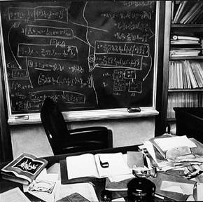

Trừ Đức, còn khắp thế giới vẫn trọng ông, cơ hồ còn hơn trước nữa vì thái độ can đảm đó. Pháp, Anh, Pháp, Y Pha Nho đều mời ông dạy học; sau cùng ông quyết định qua Mĩ, nhận một chân giáo sư ở Princeton (New Jersey).
Vừa mới tới thị trấn đó, ông thay y phục, bận một bộ đồ cũ đi dạo mát, khoan khoái vì tinh thần không còn bị kích thích như mấy tháng trước nữa. Ông vô tiệm mua một cây viết chì khi quay ra thì đám sinh viên bao nghẹt lấy ông, cảnh sát phải tới tháo vòng vây cho ông.
Ông hỏi viên cảnh sát:
- Làm sao họ biết tôi là ai?
- Ai mà không biết. Báo chí mấy ngày nay chỉ nhắc tới giáo sư thôi mà.

Phòng làm việc của Einstein ở Princeton
Hôm sau ông tới viện Đại học nằm giữa một khu rộng mấy mẫu, cây cao bóng mát. Viện đã dành cho ông một phòng riêng và hỏi ông cần những đồ đạc gì.
Ông đáp:
- Tôi chỉ cần một cái bàn, một cái ghế dựa. Phòng đã sẵn bảng đen rồi (ông ngó khắp phòng rồi nói thêm). Với một cái giỏ giấy nữa để tôi liệng vào đó những bài toán sai.
- Giáo sư sẽ nghiên cứu về cái gì?
- Tôi muốn khai triển thuyết tương đối hẹp và tương đối tổng quát cho có liên lạc chặt chẽ với nhau hơn. Tôi mong tiếp tục công việc của tôi về quantum[23]. Sau cùng, tôi ước ao gom hết các hiện tượng vật lí vào chung một số công thức toán học, tìm được những luật chung chi phối từ những proton, électron tới các vì tinh tú.
- Làm sao mà có thể có như vậy được?
Einstein ôn tồn đáp:
- Nếu không có một sự hoà điệu thâm trầm trong vũ trụ thì không thể có khoa học được.
Vậy là Einstein tiếp tục suy tư về thuyết champ unifié như trên tôi đã nói.
Đời sống và điều kiện làm việc ở Princeton thật dễ chịu. Không khí tĩnh mịch, giáo sư ít nhưng ông nào cũng có thực tài, sinh viên nghiêm trang và được lựa kĩ.
Nhưng có lúc ông thấy ngượng vì ăn lương mà chẳng làm gì ngoài cái việc suy nghĩ. Ông cho rằng ít nhất cũng phải làm một công việc để sinh nhai; như triết gia Spinoza chẳng hạn, mài kính mỗi ngày mấy giờ kiếm đủ sống rồi mới viết lách. Ông đòi dạy học như các giáo sư khác, còn thì giờ mới nghiên cứu, như vậy mới thực là độc lập, khỏi tuỳ thuộc ai cả.
Nhưng rồi ông lại nói với môn đệ của ông là Leopold Infeld:
- Tôi muốn làm một việc tay chân, như ông đóng giày để kiếm ăn, mà chỉ coi môn vật lí là món tiêu khiển, như vậy còn thú hơn là dạy vật lí.
Nhiều người cho ý tưởng đó thật lạ lùng, nhưng nếu suy nghĩ kĩ thì hiểu tâm lí của ông: ông cho vật lí học là cái gì lớn lao, cao đẹp, không nên để cái hơi đồng làm cho nó mất thanh khiết.
Năm năm sau, đủ kì hạn do luật định rồi, ông xin nhập tịch Hoa Kì. Cuối năm 1936, bà Elsa mất, từ đây ông sống non hai mươi năm gần như cô độc. Trong mấy chục năm bà lo hết việc nhà cửa, tiền nong cho ông, nhắc ông ăn hoặc bận thêm áo, che chở cho ông khỏi bị khách khứa, nhất là các nhà báo quấy rầy, lựa thư từ, trả lời nhiều cuộc phỏng vấn thay ông, mỗi khi có tò mò muốn biết về lối sống của ông. Hai người con trai của ông lúc đó cũng đã qua Hoa Kì, có gia đình, nhưng ở xa ông. Cũng may còn một người con gái riêng của bà, cô Margot, ở lại săn sóc ông. Năm đó ông 57 tuổi[24].
[23] Ý nói tiếp tục tìm hiểu về cơ học lượng tử (quantum-mechanical). Theo Nguyễn Xuân Sanh thì: “Năm 1935 sự phê phán cơ học lượng tử của Einstein được đến cao điểm được thể hiện trong bài báo cùng với hai đồng nghiệp trẻ là Boris Podolsky và Nathan Rosen mang tên “Sự mô tả thực tế vật lý bằng cơ học lượng tử có thể xem là đầy đủ?” (Can Quantum-mechanical Description of Physical Reality Be Considered Complete?). Công trình này, thường được gọi tắt là “Nghịch lý EPR” (tên tắc của 3 tác giả), nhằm chứng minh rằng mô tả vật lý bằng cơ học lượng tử là không đầy đủ”. (Sđd, tr.202). (Goldfish).
[24] Ngày 3 tháng 10 năm 1933, Einstein cùng với vợ, thư kí Helen Dukas và người trợ lý Walther Mayer rời châu Âu đi Princeton, trong khi Ilse và Margot ở lại châu Âu. Năm 1935, Ilse mất tại Paris. Margot và chồng sau đó đến Princeton với Einstein. Mùa thu năm 1935, gia đình Einstein và Helen Dukas dọn đến địa chỉ Mercer Street 112 ở Princeton. Ngày 7 tháng 9 năm 1936, bà Elsa mất. Năm 1937, Hans Einstein, con trai của Einstein, cùng với gia đình định cự tại Mĩ. Năm 1939, Maja [em gái của Einstein] qua sống với Einstein cho đến cuối đời. Mùng 1 tháng 10 năm 1940. Einstein, Margot và Helen Dukas chính thức trở thành công dân Hoa Kì. Einstein vẫn giữ quốc tịch Thuỵ Sĩ. (theo Nguyễn Xuân Sanh, Sđd, tr.356, 357). (Goldfish).